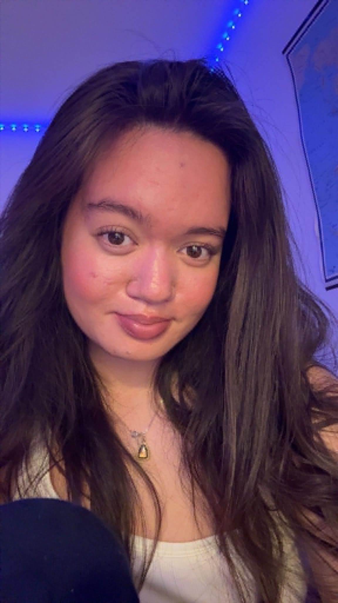

Multimediedesign · Kreativitet · Udvikling
Jeg hedder Jennifer Miwanpia Hansen, jeg er 21 år gammel, og jeg har rødder i Thailand, hvor jeg er født, før jeg kom til Danmark som lille. Jeg er social, nysgerrig og elsker at være i kreative miljøer, hvor der sker noget, og hvor jeg kan udvikle mig sammen med andre. I januar flyttede jeg fra Lolland til København for at starte på Multimediedesign, og det har været en stor — men virkelig god — forandring. Jeg har altid været interesseret i IT og webudvikling, og det føles som det helt rigtige valg for mig. Jeg trives i byen, i studiemiljøet og i det digitale arbejde, hvor jeg kan kombinere kreativitet, design og teknologi.
Jeg læser Multimediedesign på 1. semester på EK. Selvom jeg kommer fra en HHX, har jeg altid haft en interesse for web, IT og det visuelle. Jeg kunne mærke, at jeg ville noget mere kreativt og digitalt. Derfor valgte jeg at skifte retning og kaste mig ud i webudvikling og design, og det føles som det helt rigtige sted for mig.
Jeg arbejder i et byggemarked, hvilket har givet mig ro, tålmodighed og gode kundeevner — men min fremtid ligger helt klart i det digitale.
På første semester har jeg arbejdet med HTML, CSS, JavaScript, UX‑metoder, designprocesser og prototyper i Figma. Jeg har lært at planlægge projekter, teste løsninger, samarbejde i grupper og bygge rigtige websites fra bunden. Det har givet mig en stærk forståelse for både det tekniske og det visuelle — og det har gjort mig endnu mere sikker på, at jeg vil videre indenfor webudvikling og IT. Jeg kan mærke, at jeg har fundet noget, jeg virkelig godt kan lide.